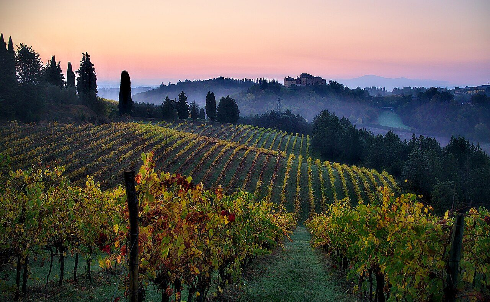

Categories We Handle
Key areas we cover in trade, wholesale, and expansion support


Drawing on our network and track record in domestic and international wholesale and trade, we support companies expanding overseas.
For companies considering overseas expansion, we offer support such as introducing local partners and building distribution channels.
Beyond direct import from Italy and other countries, we support two-way trade, including the export of Japanese products.
From leather goods to wine and food, we connect directly with suppliers at home and abroad to provide stable wholesale supply to retailers and restaurants.

Years of direct dealings with wineries and producers across Italy. That track record is now the foundation of the network and judgment we bring to expansion support.